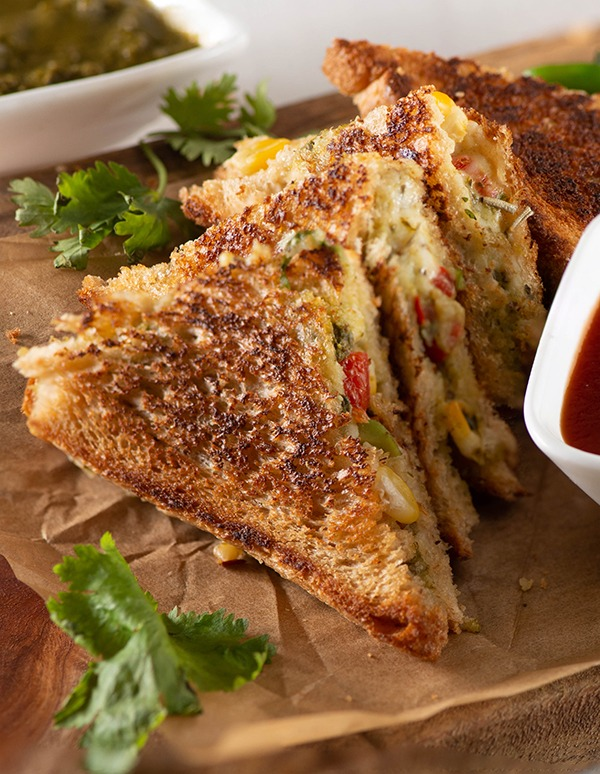

Veg-Sandwich

Vegetable Sandwich is a type of vegetable sandwich consisting of a vegetable filling between bread.
There are no set requirements other than the use of vegetables, and sandwiches may be toasted or untoasted.
Ingredients
- 2 tbsp Onions
- 2 tbsp Capsicum
- 2 tbsp Tomato
- 2 tbsp Boiled Potato
- 2 Green Chilly
- 1/4 tbsp Black Pepper Powder
- 1-2 tbsp Mayonnaise
- Brown Bread 6 slices
- Cheese Slice 3
- Butter 1tbsp
- Salt as per ur taste
Recipe
- In a large mixing bowl add the onions, capsicum, tomatoes, green chillies,boiled and mashed potato, salt,and black pepper powder and mix well.
- Once mixed add the mayonnaise and mix the stuffing well.
- Take 2 slices of bread and generously apply the stuffing on both the slices of bread evenly.
- Place 1 cheese slice on top of one of the stuffing and land the other bread with the stuffing on, on top of the cheese slice.
- Now apply butter on the top side of the bread
- Land the buttered side bread on the pan and cook till it turns golden brown in colour
- Then apply butter on the other slice of bread and cook this side as well till it turns golden in colour.
- Once both sides are grilled then remove them on a plate and cut diagonally and enjoy while it’s hot with some tomato ketchup or some spicy green chutney.